Overview
ChucK is a strongly-typed, strongly-timed, concurrent audio
and multimedia programming language. It is compiled into virtual
instructions, which are immediately run in the ChucK Virtual Machine.
This guide documents how to use the language in the Unity game engine environment.
Tutorials
These tutorials start from a working Roll a Ball game (➠Official Unity Tutorial).
You are encouraged to follow that tutorial first if you are unfamiliar with working in Unity.
If you'd rather not go through the Roll a Ball tutorial, you can download the resulting project.
If you know your way around Unity, you'll probably do fine following the below tutorials
to add ChucK to any existing Unity project.
These tutorials were created with Unity version 5.6.0f3.
Setup
-
First, you'll need to add the necessary files into the project.
Add this package to your project via the Assets > Import Package menu.
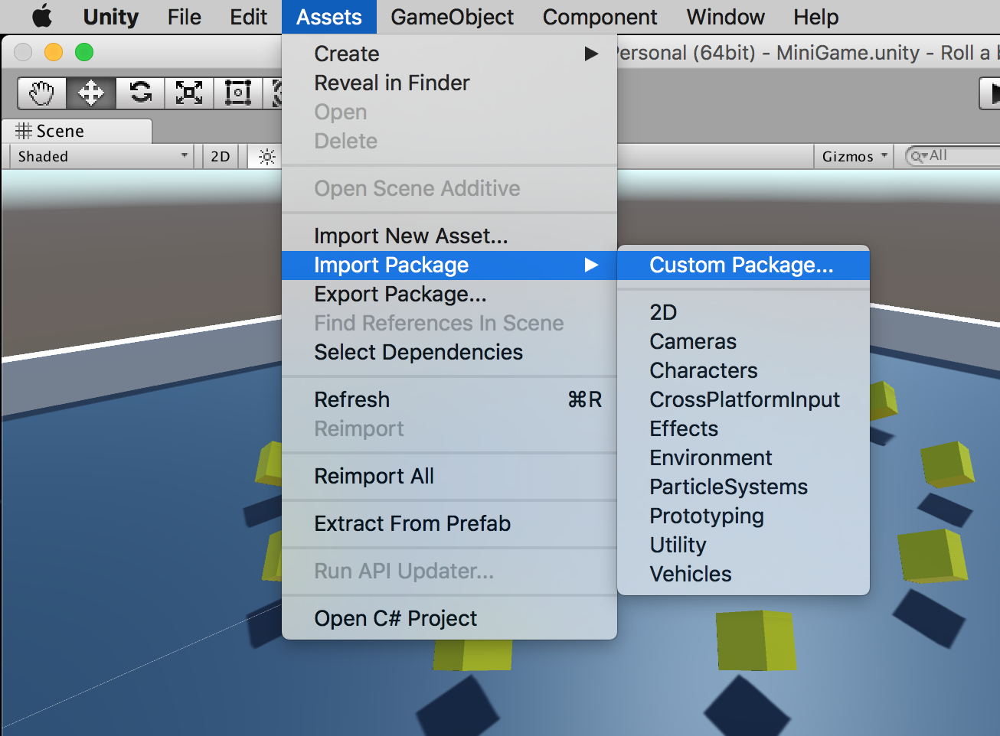
You will see something like this. Make sure to import all of the files. The names of the folders Plugins, Resources,
and StreamingAssets are especially important, since these are folders that Unity treats specially because of their names.
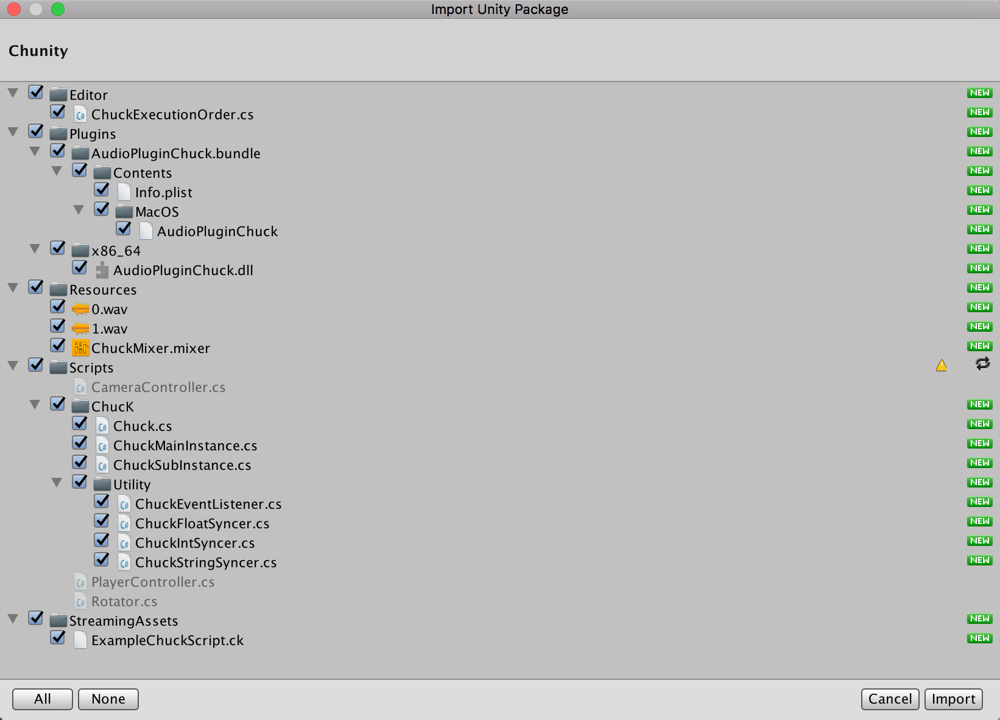
If you are replacing an older version of Chunity, restart Unity so that the new plugins are loaded correctly.
Now, you've finished adding the necessary files to use ChucK in your project!
-
Next, we'll add an instance of ChucK to our scene. This tutorial will cover how to add ChucK to an individual
game object. To use ChucK as a plugin in an Audio Mixer, see the Plugin Tutorials.
First, we need to add a global game object to hold our scene's ChuckMainInstance.
All objects that play ChucK code will contain a reference to this object.
(It's possible to have as many of these in a scene as you need, but in practice, this is only for
special circumstances like accessing two different microphones.)
Here, I have created a new empty game object called TheChuck and I am adding the
ChuckMainInstance component to it.
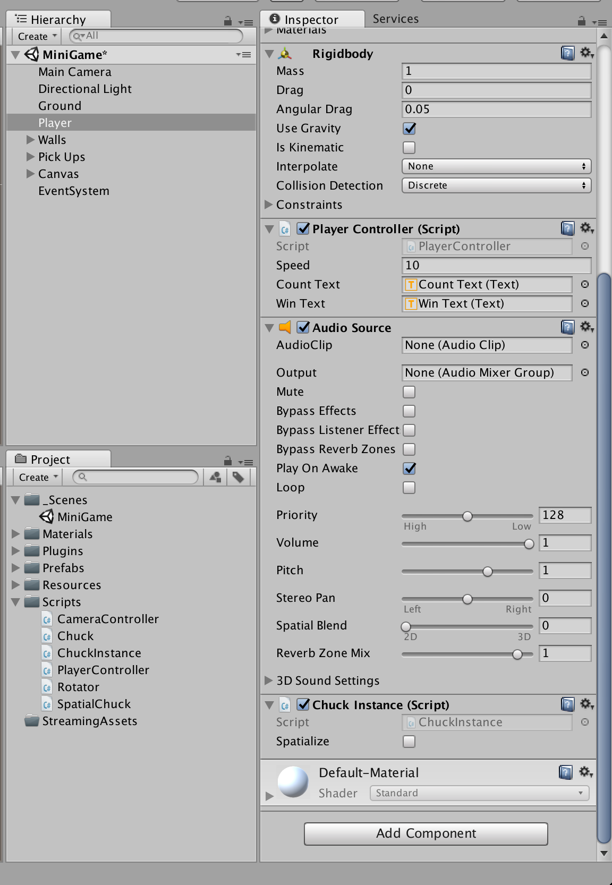
Doing so will automatically add an Audio Source to the object.
This is used to fetch the microphone input correctly. You can ignore it.
(If you want to play audio files in ChucK, you
should not use this Audio Source but should instead follow the directions in the Audio Files tutorial.)
You can also ignore the Microphone Identifier field,
unless you want to use a microphone different than your system's default microphone.
(In that case, put some substring of the name of the microphone into this field.)
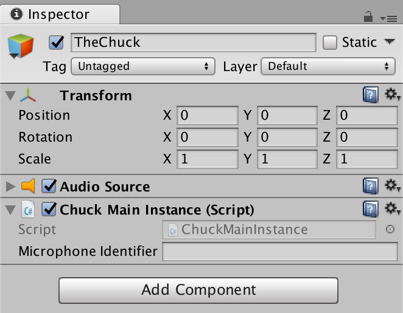
Now that we have created a ChuckMainInstance for our scene, we can
begin creating ChuckSubInstances on game objects in our scene.
Pick the game object you want to add ChucK to. In this case, I will add it to my Player object.
Add a ChuckSubInstance script to this game object.
By adding this script, an Audio Source will also be added to your game object.
This Audio Source is used by ChucK to function correctly. (If you want to play audio files in ChucK, you
should not use this Audio Source but should instead follow the directions in the Audio Files tutorial.)
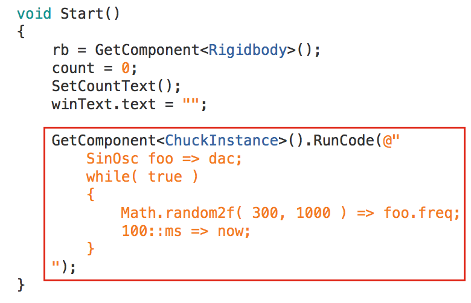
The next step is to give this component a reference to the ChuckMainInstance
we created earlier. Drag it into the Chuck Main Instance slot on the new
ChuckSubInstance component.
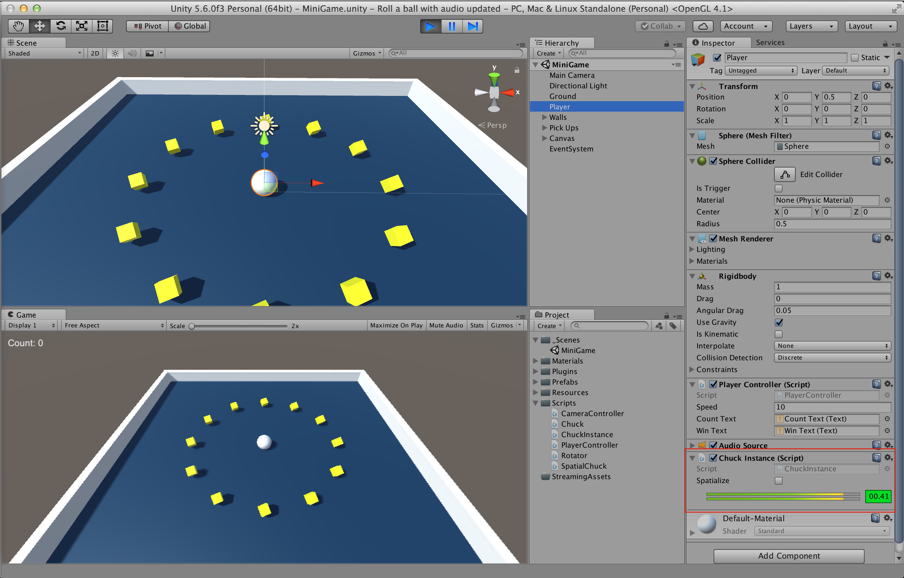
If you are using ChucK spatially, you can edit the 3D Sound options of this Audio Source. Since we are not using this
ChucK spatially, we can leave all the settings alone. Now we are done adding a ChucK Instance to our scene!
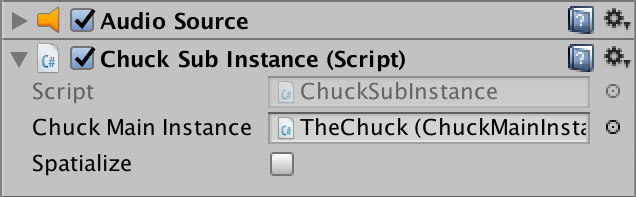
-
Next, let's access this ChucK plugin through a Unity C# script.
Since I am adding ChucK to my Roll a Ball project (➠Official Unity Tutorial),
I'll add ChucK to my PlayerController script. This script operates on the same object I added the ChucK Instance to.
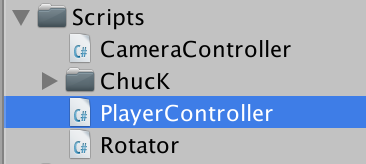
Now, let's write our first ChucK script in Unity!
Here's a new ChucK script. It's sent to the ChucK plugin using
GetComponent<ChuckSubInstance>().RunCode, where the argument
is a string with ChucK code that will be compiled and run on the fly.
This particular ChucK script connects a sine wave to the output,
then sets its frequency randomly between 300 Hz and 1000 Hz every 100 ms, forever.
(Note: @"" denotes a multi-line string.)
void Start()
{
rb = GetComponent<Rigidbody>();
count = 0;
SetCountText();
winText.text = "";
GetComponent<ChuckSubInstance>().RunCode(@"
SinOsc foo => dac;
while( true )
{
Math.random2f( 300, 1000 ) => foo.freq;
100::ms => now;
}
");
}
Let's test it! Enter play mode.

And you can hear audio! (Check the ChuckSubInstance script to see the audio levels for the instance while the game is in Play Mode.)
Congratulations! You now have ChucK working inside of a Unity project!!
Responding to Unity Events / Using Unity Variables (1)
In the previous tutorial, we set up ChucK in a Unity project and
wrote a script that plays a sine wave with a randomly-changing frequency
forever. Let's change that script into something a bit more appropriate
for our Roll a Ball game.
First, delete the original call to ChuckSubInstance.RunCode()
so that our original ChucK script doesn't play anymore.
Now, I want to write a script that plays every time our Player object
picks up a Pick Up object. This will go in the OnTriggerEnter
function, where we detect collisions with trigger objects.
void OnTriggerEnter( Collider other )
{
if( other.gameObject.CompareTag( "Pick Up" ) )
{
other.gameObject.SetActive( false );
count = count + 1;
SetCountText();
GetComponent<ChuckSubInstance>().RunCode(@"
SinOsc foo => dac;
repeat( 5 )
{
Math.random2f( 300, 1000 ) => foo.freq;
100::ms => now;
}
");
}
}
Here, I've added a new ChucK script in that function. It runs directly after
we increment the count of how many pickup objects have been picked up so far.
It's very similar to the first script, but only plays 5 different frequencies
instead of running forever. ( repeat( 5 ) instead
of while( true ) ).
This is a good start, but it's not very interesting. How about we make it repeat
a number of times according to the current count?
To do this, we can use the string.Format() function.
This function takes a string with format substrings that look like {0},
{1:0.00}, {2}, etc.
and takes arguments to fill all the numbered slots.
Because arguments to string.Format() are
specified with { and },
we have to write {{ if we mean {
and }} if we mean }.
So, to translate the above script into one that repeats count
times instead of 5 times, I replace the
5 with a {0},
replace all { and } with
{{ and }}, then wrap the
code string in a call to string.Format() and include
count as the second argument.
void OnTriggerEnter( Collider other )
{
if( other.gameObject.CompareTag( "Pick Up" ) )
{
other.gameObject.SetActive( false );
count = count + 1;
SetCountText();
GetComponent<ChuckSubInstance>().RunCode( string.Format( @"
SinOsc foo => dac;
repeat( {0} )
{{
Math.random2f( 300, 1000 ) => foo.freq;
100::ms => now;
}}
", count ) );
}
}
It's that simple to write and launch ChucK code that responds to a Unity event
and uses values from current Unity variables!
Spatialization
Spatialization is the technique of processing a stream of audio so that it
is perceived to be originating from a particular place in the environment.
Here, I will demonstrate how to achieve a simple form of spatialization in
Unity to spatialize sounds generated from a ChucK plugin.
This technique will set the overall volume according to the distance from
the audio listener to the source of audio, and will set the relative volume
of the left and right channels according to the direction between the audio
listener and the source of audio, but will not use HRTFs or change the spectral
content of the source of audio in any way.
-
First, we will set up a new ChucK plugin. Let's select a Unity object that we will be spatializing.
I'd like for one of my Pick Up objects to create spatialized sound, so I'll select
one of these objects from the Hierarchy pane.

Add a ChuckSubInstance to this object.
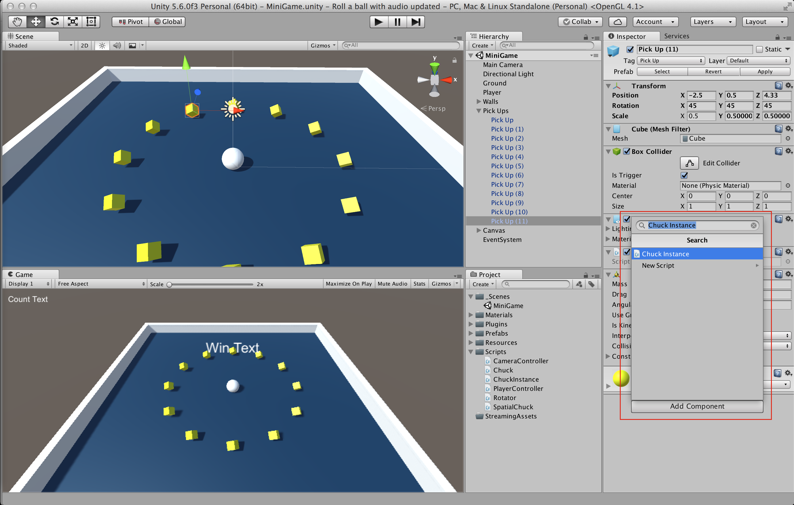
And select the spatialize option!
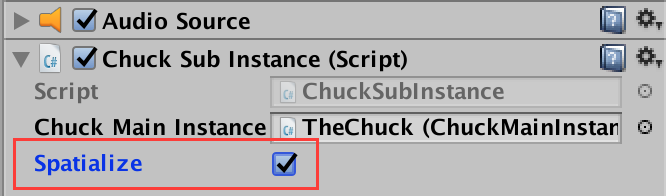
Note that an AudioSource has been added as a result of
adding the ChuckSubInstance script. ChucK uses this AudioSource to capture spatialization
data. ChucK will use the AudioClip, Play On Awake, Loop, and Spatial Blend fiels, setting
them automatically whenever the scene is run. (If you'd like to play an audio file, use
audio files in ChucK instead.)
You can use the 3D sound settings to adjust how your ChucK script is spatialized.
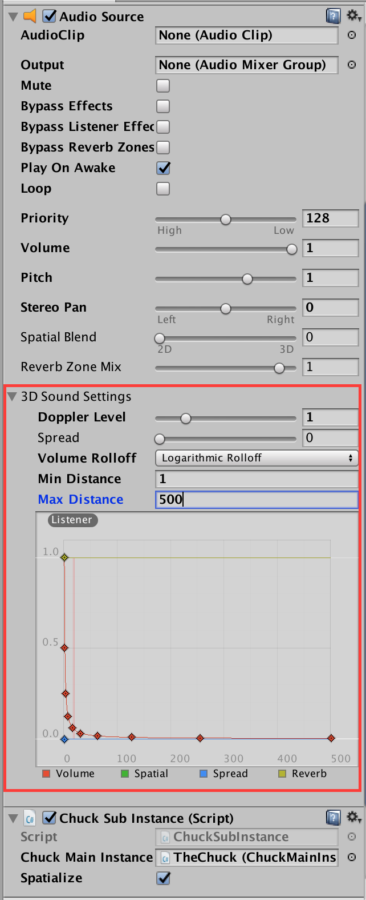
In particular, I am going to change my maximum distance to be 40, since my scene is rather small.
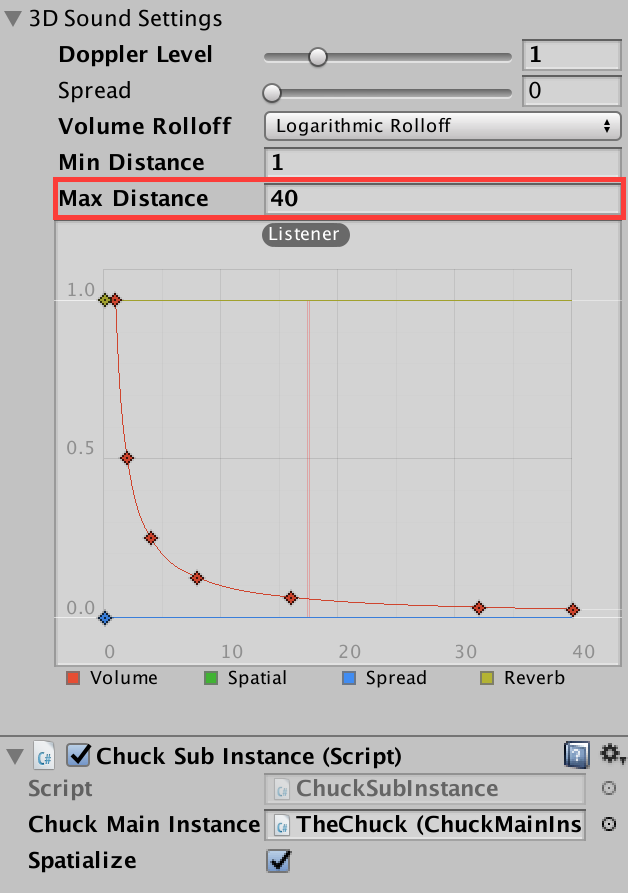
Now, the ChucK instance is all set up for spatial audio!
-
Now, let's write a script to use the new spatialized ChucK instance.
I'll add a new script called PickupAudio to my
pickup object -- the same object that has the ChuckInstance
component from the last step.

(Don't forget to move your new script to the Scripts folder!)

We write ChucK code for a spatialized ChucK instance in exactly the same way as for a
non-spatialized ChucK instance!
public class PickupAudio : MonoBehaviour
{
void Start()
{
GetComponent<ChuckSubInstance>().RunCode(@"
TriOsc spatialOsc => dac;
while( true )
{
Math.random2f( 300, 1000 ) => spatialOsc.freq;
50::ms => now;
}
" );
}
}
-
Let's test our new script to see if it's working!
When my Audio Listener has an the Audio Source on its right, then the spatialized audio output is louder
in the left channel than the right.
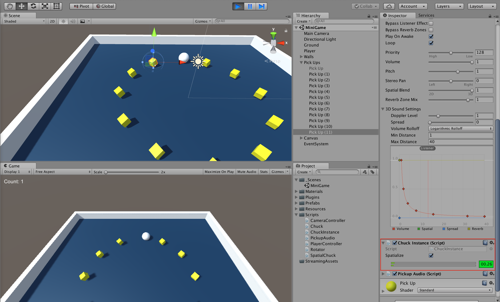
And, when my Audio Listener is on the left side of an Audio Source, the spatialized audio
is louder on the right channel than the left! The reason that the audio is so quiet in both cases is
that the Audio Listener is on our scene's Camera, so in both cases the Audio Listener is actually pretty
far away from the Audio Source.

Congratulations! You've just set up your first spatial audio script in Unity using ChucK!
-
(Addendum) In the spirit of designing audio and visuals in tandem, I'd like to make
the spatialized Pick Up stand out from the rest of the Pick Ups.
This way, there will be a visual cue that corresponds to the spatial sound cues.
I'll start by making the spatialized Pick Up a different color.
Highlight the Pick Up material in the Project pane.
This material is what gives the Pick Ups their yellow color.

Duplicate it using CTRL-D (Windows) or CMD-D (OS X).

Give the duplicated material a new name. I'll call mine Spatial Pick Up.

Next, I'll change the color of my new material by editing the Albedo property.

There! Now, any object using the Spatial Pick Up material will be colored green.

Apply the new material to the Pick Up we added spatialization to by dragging
the material from the Project pane onto the Pick Up in the Hierarchy pane.

Now, the Pick Up looks different! But, I still don't think that its visual
appearance corresponds very well with the sound of a triangle wave oscillator
with a rapidly-changing frequency...
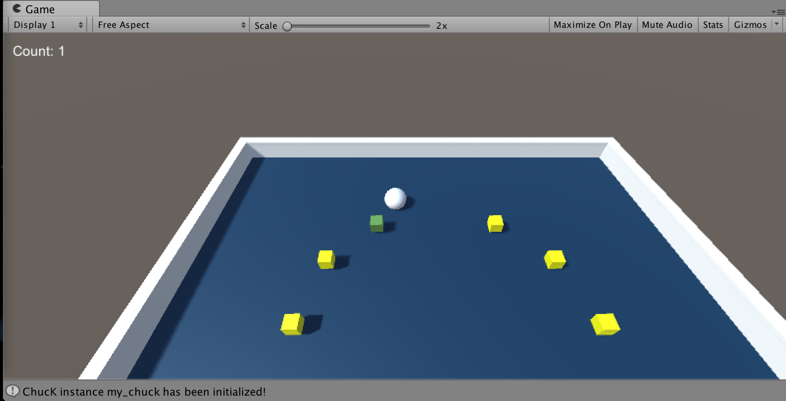
Let's change this by adding a rapid movement to the spatial Pick Up!
We'll do this by modifying the existing Rotator
class, which is responsible for rotating all the Pick Ups.
Since we want to create a behavior that is turned on only for some
Pick Ups, we'll add a new public boolean that controls whether the behavior
is turned on or off.
public class Rotator : MonoBehaviour
{
public bool rotateRandomly = false;
void Update()
{
transform.Rotate( new Vector3( 15, 30, 45 ) * Time.deltaTime );
}
}
Next, we'll add a new Vector3 local variable to
the Update() function. If the rotateRandomly
behavior is enabled, then the rotateAmount vector is
set to have three random values, each selected uniformly from the range
[100, 800).
If rotateRandomly is not enabled, then the
rotateAmount will be the same as it was before we
started modifying this script.
Finally, we'll modify the call to transform.Rotate
to take our new rotateAmount variable.
void Update()
{
// choose rotation
Vector3 rotateAmount;
if( rotateRandomly )
{
// vector where x, y, z all in [100, 800)
rotateAmount = new Vector3(
Random.Range( 100, 800 ),
Random.Range( 100, 800 ),
Random.Range( 100, 800 )
);
}
else
{
// original rotation vector
rotateAmount = new Vector3( 15, 30, 45 );
}
// apply rotation
transform.Rotate( rotateAmount * Time.deltaTime );
}
The last thing to do is to set the new Rotate Randomly boolean to be checked on
for the Pick Up we spatialized earlier.

When you've done that, it will look like this for the spatial Pick Up, but will
remain unchecked for the rest of the Pick Ups.

Now, the spatial Pick Up looks really visually distinct, and its movement aligns
well with the audio it is emitting!

Congratulations! You've finished integrating spatial audio into a ChucK project!
Audio Files
This tutorial will walk through writing a ChucK script that plays an audio
file. The script will play an audio file whenever the Player game object collides
with another game object. The audio file's amplitude and speed of playback will
depend on a Unity variable, added to the script with string formatting.
For any file to be copied directly to the file system for your code to access
during runtime, it must be located inside of a special folder called StreamingAssets.
Create this folder in your Project pane and put an audio file you'd like to
use inside it. My audio file is called impact.wav.
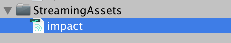
Since I'd like to play this file when the Player collides with another game object,
I'll add an OnCollisionEnter() method to my Player class.
To determine what range of possible values the collision's velocity magnitude
can take on, I'll use Unity's Debug Log to print out the value, enter play
mode, and cause collisions with the game walls at a variety of velocities.
void OnCollisionEnter( Collision collision )
{
float intensity = collision.relativeVelocity.magnitude;
Debug.Log( intensity );
}
Based on this experiment, it looks like the relevant range of my intensity
variable will be roughly [0, 16].

I'll scale the intensity down to roughly [0, 1] by dividing it by
16, then clamp it to exactly [0, 1].
Finally, I'll square this value so that the sound changes quadratically with an increase in velocity,
rather than linearly. This will help especially fast collisions to stand out more.
void OnCollisionEnter( Collision collision )
{
// map and clamp from [0, 16] to [0, 1]
float intensity = Mathf.Clamp01( collision.relativeVelocity.magnitude / 16 );
// square it to make the ramp upward more dramatic
intensity = intensity * intensity;
}
Finally, I'll add my ChucK code. The intensity parameter is inserted just as in the
Using Unity Variables(1) tutorial. Note that when
writing multi-line strings, any single quotes " must be
specified by writing "".
The sound file itself is accessed via its filename. Note that in Unity, the
me.dir() ChucK expression refers automatically to the
StreamingAssets folder for code that is run using
ChuckInstance.RunCode().
void OnCollisionEnter( Collision collision )
{
// map and clamp from [0, 16] to [0, 1]
float intensity = Mathf.Clamp01( collision.relativeVelocity.magnitude / 16 );
// square it to make the ramp upward more dramatic
intensity = intensity * intensity;
GetComponent<ChuckSubInstance>().RunCode( string.Format( @"
SndBuf impactBuf => dac;
me.dir() + ""impact.wav"" => impactBuf.read;
// start at the beginning of the clip
0 => impactBuf.pos;
// set rate: least intense is fast, most intense is slow; range 0.4 to 1.6
1.5 - {0} + Math.random2f( -0.1, 0.1 ) => impactBuf.rate;
// set gain: least intense is quiet, most intense is loud; range 0.05 to 1
0.05 + 0.95 * {0} => impactBuf.gain;
// pass time so that the file plays
impactBuf.length() / impactBuf.rate() => now;
", intensity ) );
}
It's that simple to write ChucK scripts that use audio files in Unity! Just add your
audio files to the StreamingAssets folder and access their
filenames in ChucK using me.dir().
Printing to the Unity Console
It's easy to write print statements in ChucK that you can see in Unity.
Any print statements written using chout,
cherr, or the "gack" triple-angle-brackets
( <<< "hello, world" >>>; ) will
automatically appear in the Unity console.
For example, this ChucK script computes a value with a random error added to it,
then prints the resulting value to the console.
GetComponent<ChuckSubInstance>().RunCode( string.Format( @"
SndBuf impactBuf => dac;
me.dir() + ""impact.wav"" => impactBuf.read;
// start at the beginning of the clip
0 => impactBuf.pos;
// set rate: least intense is fast, most intense is slow; range 0.4 to 1.6
1.5 - {0} + Math.random2f( -0.1, 0.1 ) => impactBuf.rate;
chout <= ""Rate is "" <= impactBuf.rate() <= IO.newline();
// set gain: least intense is quiet, most intense is loud; range 0.05 to 1
0.05 + 0.95 * {0} => impactBuf.gain;
// pass time so that the file plays
impactBuf.length() / impactBuf.rate() => now;
", intensity ) );
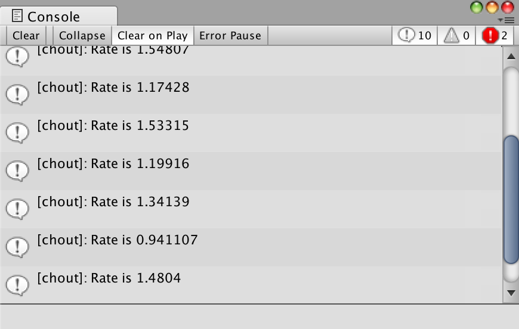
Using Unity Variables (2): ChucK External Variables
This tutorial documents ChucK external variables. Using this type of variable
allows you to set and get the values of ChucK variables after a ChucK script
is already running. Currently, it can be applied to ints and floats. It can
also be applied to Events, for which the relevant actions are signaling and
broadcasting the event.
This tutorial will also go over writing a function in ChucK and running that
function in a new shred (the word for threads in ChucK).
Let's start with the ChucK script that we wrote in the Audio Files
tutorial. This ChucK script plays an audio file and exits immediately afterward. The script
is compiled and run every time the Player object has a collision.
void OnCollisionEnter( Collision collision )
{
// map and clamp from [0, 16] to [0, 1]
float intensity = Mathf.Clamp01( collision.relativeVelocity.magnitude / 16 );
// square it to make the ramp upward more dramatic
intensity = intensity * intensity;
GetComponent<ChuckSubInstance>().RunCode( string.Format( @"
SndBuf impactBuf => dac;
me.dir() + ""impact.wav"" => impactBuf.read;
// start at the beginning of the clip
0 => impactBuf.pos;
// set rate: least intense is fast, most intense is slow; range 0.4 to 1.6
1.5 - {0} + Math.random2f( -0.1, 0.1 ) => impactBuf.rate;
chout <= ""Rate is "" <= impactBuf.rate() <= IO.newline();
// set gain: least intense is quiet, most intense is loud; range 0.05 to 1
0.05 + 0.95 * {0} => impactBuf.gain;
// pass time so that the file plays
impactBuf.length() / impactBuf.rate() => now;
", intensity ) );
}
}
In this tutorial, I will translate this script into one that is compiled and run once when
the scene is opened. The new version of the script will trigger the audio file as a result
of communication with Unity using ChucK external variables.
The first thing to do is move the script from OnCollisionEnter()
to Start().
void Start()
{
rb = GetComponent<Rigidbody>();
count = 0;
SetCountText();
winText.text = "";
GetComponent<ChuckSubInstance>().RunCode( string.Format( @"
SndBuf impactBuf => dac;
me.dir() + ""impact.wav"" => impactBuf.read;
// start at the beginning of the clip
0 => impactBuf.pos;
// set rate: least intense is fast, most intense is slow; range 0.4 to 1.6
1.5 - {0} + Math.random2f( -0.1, 0.1 ) => impactBuf.rate;
chout <= ""Rate is "" <= impactBuf.rate() <= IO.newline();
// set gain: least intense is quiet, most intense is loud; range 0.05 to 1
0.05 + 0.95 * {0} => impactBuf.gain;
// pass time so that the file plays
impactBuf.length() / impactBuf.rate() => now;
", intensity ) );
}
Next, remove the call to string.Format and replace all
of the format locations in the string with a new variable, intensity.
Wrap the entire script into a function called playImpact( float intensity ).
GetComponent<ChuckSubInstance>().RunCode( @"
fun void playImpact( float intensity )
{
SndBuf impactBuf => dac;
me.dir() + ""impact.wav"" => impactBuf.read;
// start at the beginning of the clip
0 => impactBuf.pos;
// set rate: least intense is fast, most intense is slow; range 0.4 to 1.6
1.5 - intensity + Math.random2f( -0.1, 0.1 ) => impactBuf.rate;
chout <= ""Rate is "" <= impactBuf.rate() <= IO.newline();
// set gain: least intense is quiet, most intense is loud; range 0.05 to 1
0.05 + 0.95 * intensity => impactBuf.gain;
// pass time so that the file plays
impactBuf.length() / impactBuf.rate() => now;
}
" );
Now, let's add the external variables we will use to signal when this function should be called.
We will set the value of an external float from Unity, and then we
will signal an external Event from Unity to tell the ChucK script
that it should play an impact using the value stored in the external float.
These variables are specified just like regular variables, but with the external
keyword. Note that only global variables can be external, and currently the
only variable types supported are int, float, and Event.
GetComponent<ChuckSubInstance>().RunCode( @"
fun void playImpact( float intensity )
{
SndBuf impactBuf => dac;
me.dir() + ""impact.wav"" => impactBuf.read;
// start at the beginning of the clip
0 => impactBuf.pos;
// set rate: least intense is fast, most intense is slow; range 0.4 to 1.6
1.5 - intensity + Math.random2f( -0.1, 0.1 ) => impactBuf.rate;
chout <= ""Rate is "" <= impactBuf.rate() <= IO.newline();
// set gain: least intense is quiet, most intense is loud; range 0.05 to 1
0.05 + 0.95 * intensity => impactBuf.gain;
// pass time so that the file plays
impactBuf.length() / impactBuf.rate() => now;
}
external float impactIntensity;
external Event impactHappened;
" );
Let's write the code that uses these variables. To wait for an Event to fire,
we simply chuck the event to now. To call the playImpact
function we just defined, but in a new shred, we spork ~ the function
call.
So, forever ( while( true ) ), we will wait for an
impactHappened event, and then call playImpact
with the value stored in impactIntensity.
GetComponent<ChuckSubInstance>().RunCode( @"
fun void playImpact( float intensity )
{
SndBuf impactBuf => dac;
me.dir() + ""impact.wav"" => impactBuf.read;
// start at the beginning of the clip
0 => impactBuf.pos;
// set rate: least intense is fast, most intense is slow; range 0.4 to 1.6
1.5 - intensity + Math.random2f( -0.1, 0.1 ) => impactBuf.rate;
chout <= ""Rate is "" <= impactBuf.rate() <= IO.newline();
// set gain: least intense is quiet, most intense is loud; range 0.05 to 1
0.05 + 0.95 * intensity => impactBuf.gain;
// pass time so that the file plays
impactBuf.length() / impactBuf.rate() => now;
}
external float impactIntensity;
external Event impactHappened;
while( true )
{
impactHappened => now;
spork ~ playImpact( impactIntensity );
}
" );
Finally, in the OnCollisionEnter function, after we compute
the collision's intensity, we first set the value of the float impactIntensity
and then broadcast the event impactHappened. These functions take the string
name of the ChucK plugin as the first argument and the name of the external variable as the second argument,
since each ChucK plugin has its own namespace of external variables.
void OnCollisionEnter( Collision collision )
{
// map and clamp from [0, 16] to [0, 1]
float intensity = Mathf.Clamp01( collision.relativeVelocity.magnitude / 16 );
// square it to make the ramp upward more dramatic
intensity = intensity * intensity;
// set the intensity and fire the event
GetComponent<ChuckSubInstance>().SetFloat( "impactIntensity", intensity );
GetComponent<ChuckSubInstance>().BroadcastEvent( "impactHappened" );
}
Congratulations! You've written a script using external variables. This practice allows you to write
slightly more efficient code, since you won't need to send a new script to the ChucK compiler every time you want
to generate sound.
Getting ChucK External Variables
Now let's look at how to get back out the values of external variables!
You might want to do this if you want to do some analysis of your audio in ChucK and use the results in Unity.
Let's start by adding a new script onto the same game object where our ChuckInstance is. I'll call my script
AudioAnalyzer because it will be analyzing all the audio that comes out of the
dac on this ChuckInstance.
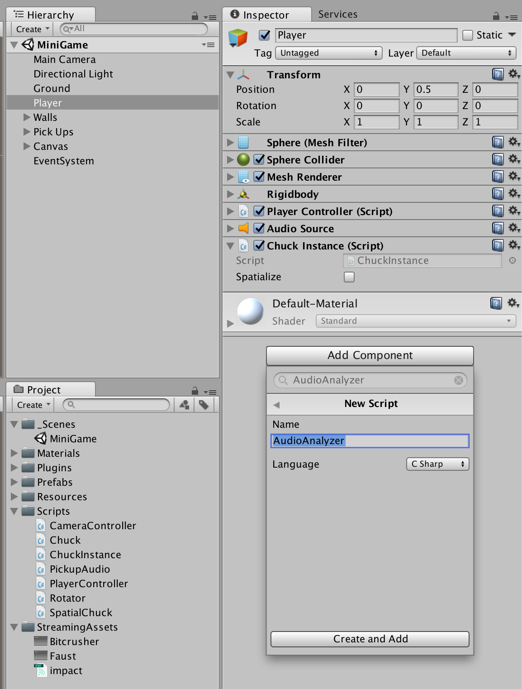
In this new Unity class, I add a variable to store a float from ChucK. This is
double mostRecentDacLoudness. (Note that ChucK floats correspond to Unity
doubles, and ChucK ints correspond to Unity
longs.)
Next, I write a ChucK script. In it, I have a ChucK external variable dacLoudness, and every time
I compute the loudness of the dac using an RMS Unit Analyzer ("UAna"),
I store the result in dacLoudness.
Then, in the Unity Update() function, I call GetFloat with the name
of the float I'd like to get and a function that will be called for the ChuckInstance to send back the value of the float.
The name of the function is GetDacLoudnessCallback. I pass this function using a
Chuck.FloatCallback (here, myGetLoudnessCallback), constructed
in the Start function.
In GetDacLoudnessCallback, I store the value of the double (remember, a ChucK float is a Unity double) into a class
member variable to use later. Note that you cannot use many Unity-provided functions within such a callback,
so if you want to do something other than a Debug.Log, you will need to store
the value in this way and use it somewhere else, such as in Update() or
FixedUpdate().
public class AudioAnalyzer : MonoBehaviour
{
double mostRecentDacLoudness;
ChuckInstance myChuck;
Chuck.FloatCallback myGetLoudnessCallback;
void Start()
{
myChuck = GetComponent<ChuckSubInstance>();
myGetLoudnessCallback = myChuck.CreateGetFloatCallback(
GetDacLoudnessCallbackFunction
);
myChuck.RunCode( @"
external float dacLoudness;
dac => FFT fft =^ RMS rms => blackhole;
1024 => fft.size;
Windowing.hann( fft.size() ) => fft.window;
while( true )
{
// upchuck: take fft then rms
rms.upchuck() @=> UAnaBlob data;
// store value in external variable
data.fval(0) => dacLoudness;
// advance time
fft.size()::samp => now;
}
" );
}
void Update()
{
myChuck.GetFloat( "dacLoudness", myGetLoudnessCallback );
}
void GetDacLoudnessCallbackFunction( double dacLoudness )
{
mostRecentDacLoudness = dacLoudness;
Debug.Log( "got a value for dac loudness: " + dacLoudness.ToString( "0.000" ) );
}
}
This script might work most of the time, but it can be cumbersome to work this way. The reason why you can't
access much of the Unity functionality from your callback function, and have to store the value instead,
is because this function is being called from the audio thread, rather than the graphics thread (which
is where functions like Update are called from).
You can use a helper component to encapsulate all this inter-thread communication. Here, I use a
ChuckFloatSyncer to keep the value of the external float dacLoudness
synced with the graphics thread. You can always get the most recently fetched value from the syncer with the
GetCurrentValue() function.
public class AudioAnalyzer : MonoBehaviour
{
ChuckSubInstance myChuck;
ChuckFloatSyncer myGetLoudnessSyncer;
void Start()
{
myChuck = GetComponent<ChuckSubInstance>();
myChuck.RunCode( @"
external float dacLoudness;
dac => FFT fft =^ RMS rms => blackhole;
1024 => fft.size;
Windowing.hann( fft.size() ) => fft.window;
while( true )
{
// upchuck: take fft then rms
rms.upchuck() @=> UAnaBlob data;
// store value in external variable
data.fval(0) => dacLoudness;
// advance time
fft.size()::samp => now;
}
" );
myGetLoudnessSyncer = gameObject.AddComponent<ChuckFloatSyncer>();
myGetLoudnessSyncer.SyncFloat( myChuck, "dacLoudness" );
}
void Update()
{
Debug.Log( "most recent dac loudness: " +
myGetLoudnessSyncer.GetCurrentValue().ToString( "0.000" )
);
}
}
Congratulations! You've written a script to get the value of a ChucK external variable! Now you can communicate
the results of ChucK computation back to Unity!
Chugins
It's possible to write additions to ChucK in C++ and compile these additions
as dynamically linked libraries (known as ChuGins).
If you're interested in writing your own ChuGin, check out the
GitHub
repository for more information.
In Unity, any ChuGin that is added to the StreamingAssets/Chugins
folder is automatically usable in any ChucK script.
(StreamingAssets is the same folder that is used to store your audio files.)
ChuGins often take the form of new UGens (unit generators), the core objects that
process all audio in ChucK.
For example, if I add the Bitcrusher.chug ChuGin to
my Chugins folder...

... then, I can write ChucK scripts using the Bitcrusher UGen!
Here, I've modified the Audio File impact script
to process my audio file through a Bitcrusher. To do this, I just added
the Bitcrusher to the signal flow, set its settings, and allowed some extra
time at the end of the audio file to wait for the Bitcrusher's tail of audio
to finish playing.
GetComponent<ChuckSubInstance>().RunCode( @"
fun void playImpact( float intensity )
{
SndBuf impactBuf => Bitcrusher bc => dac;
me.dir() + ""impact.wav"" => impactBuf.read;
// start at the beginning of the clip
0 => impactBuf.pos;
// set rate: least intense is fast, most intense is slow; range 0.4 to 1.6
1.5 - intensity + Math.random2f( -0.1, 0.1 ) => impactBuf.rate;
chout <= ""Rate is "" <= impactBuf.rate() <= IO.newline();
// set gain: least intense is quiet, most intense is loud; range 0.05 to 1
0.05 + 0.95 * intensity => impactBuf.gain;
// bitcrusher settings
0.5 => bc.gain;
7 => bc.bits;
3 => bc.downsampleFactor;
// pass time so that the file plays
impactBuf.length() / impactBuf.rate() + 5::second => now;
}
external float impactIntensity;
external Event impactHappened;
while( true )
{
impactHappened => now;
spork ~ playImpact( impactIntensity );
}
" );
Thanks for following these tutorials. Good luck ChucKing in Unity!